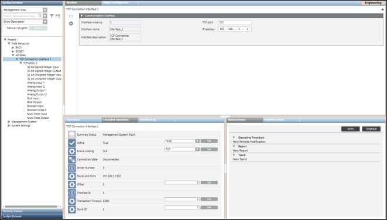

Modbus Interface
Modbus interfaces are imported under the following path: Field Networks > Modbus Network in Management View of System Browser.
Before importing Modbus interfaces, the Modbus network must be available.
In System Browser, each Modbus network contains a set of Modbus interfaces and each of them contains the devices and points attached to that interface.
Communication Interface Expander
In Engineering mode, when you select a Modbus interface in System Browser its settings display in the Communication Interface expander in the Modbus tab. You can save the data or delete the Modbus interface.
Modbus Toolbar | ||
Icon | Name | Description |
| Save data | Saves any changes. |
| Delete | Deletes the current object. |



Communication Interface Expander Fields | |
Name | Description |
Interface ID | Displays the interface instance number (read only). |
Interface name | Name of the interface. (read only). |
TCP port | Displays the TCP port number assigned to the device in the network. You can modify this field. |
IP address | Displays the hardware address of a device connected to a network that uses Internet Protocol (IP) for communication. You can modify this field. |
Communication Interface Properties | |
Property Name | Description |
Summary Status | Displays the summary status |
Active | Displays the connection status of the device. It can have two values: |
Frame Coding | Type of FrameCoding supported by the device. It can have either of the following values: Default value is TCP, however, you can set a different value as per the device specification. |
Connection State | Connection state of the device. |
Driver Number | Driver ID to which the connection object is linked. |
Hosts and Ports | Host ID and port number of the device. |
Offset | This data point element allows for defining the offset. Default value is 0 but you can set a different value. |
Interface ID | Displays the interface ID |
Transaction Timeout | The timeout period between a request and response. This period is specified in milliseconds (100-100000). In the event of a timeout, the request is lost and the connection is closed. The connection can only be re-established at the next request. |
Slave ID | Slave ID of the communication interface. |